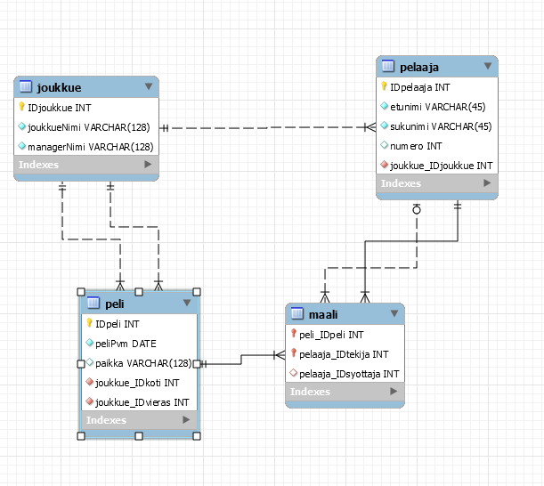

Palautuspäivämäärä 29.8.2019

-- MySQL Workbench Forward Engineering
SET @OLD_UNIQUE_CHECKS=@@UNIQUE_CHECKS, UNIQUE_CHECKS=0;
SET @OLD_FOREIGN_KEY_CHECKS=@@FOREIGN_KEY_CHECKS, FOREIGN_KEY_CHECKS=0;
SET @OLD_SQL_MODE=@@SQL_MODE, SQL_MODE='TRADITIONAL,ALLOW_INVALID_DATES';
-- -----------------------------------------------------
-- Schema N0464
-- -----------------------------------------------------
-- -----------------------------------------------------
-- Schema N0464
-- -----------------------------------------------------
CREATE SCHEMA IF NOT EXISTS `N0464` DEFAULT CHARACTER SET utf8 ;
USE `N0464` ;
-- -----------------------------------------------------
-- Table `N0464`.`joukkue`
-- -----------------------------------------------------
CREATE TABLE IF NOT EXISTS `N0464`.`joukkue` (
`IDjoukkue` INT NOT NULL AUTO_INCREMENT,
`joukkueNimi` VARCHAR(128) NOT NULL,
`managerNimi` VARCHAR(128) NOT NULL,
PRIMARY KEY (`IDjoukkue`))
ENGINE = InnoDB;
-- -----------------------------------------------------
-- Table `N0464`.`peli`
-- -----------------------------------------------------
CREATE TABLE IF NOT EXISTS `N0464`.`peli` (
`IDpeli` INT NOT NULL AUTO_INCREMENT,
`peliPvm` DATE NOT NULL,
`paikka` VARCHAR(128) NULL,
`joukkue_IDkoti` INT NOT NULL,
`joukkue_IDvieras` INT NOT NULL,
PRIMARY KEY (`IDpeli`),
INDEX `fk_peli_joukkue1_idx` (`joukkue_IDkoti` ASC),
INDEX `fk_peli_joukkue2_idx` (`joukkue_IDvieras` ASC),
CONSTRAINT `fk_peli_joukkue1`
FOREIGN KEY (`joukkue_IDkoti`)
REFERENCES `N0464`.`joukkue` (`IDjoukkue`)
ON DELETE NO ACTION
ON UPDATE NO ACTION,
CONSTRAINT `fk_peli_joukkue2`
FOREIGN KEY (`joukkue_IDvieras`)
REFERENCES `N0464`.`joukkue` (`IDjoukkue`)
ON DELETE NO ACTION
ON UPDATE NO ACTION)
ENGINE = InnoDB;
-- -----------------------------------------------------
-- Table `N0464`.`pelaaja`
-- -----------------------------------------------------
CREATE TABLE IF NOT EXISTS `N0464`.`pelaaja` (
`IDpelaaja` INT NOT NULL AUTO_INCREMENT,
`etunimi` VARCHAR(45) NOT NULL,
`sukunimi` VARCHAR(45) NOT NULL,
`numero` INT NULL,
`joukkue_IDjoukkue` INT NOT NULL,
PRIMARY KEY (`IDpelaaja`),
INDEX `fk_pelaaja_joukkue_idx` (`joukkue_IDjoukkue` ASC),
CONSTRAINT `fk_pelaaja_joukkue`
FOREIGN KEY (`joukkue_IDjoukkue`)
REFERENCES `N0464`.`joukkue` (`IDjoukkue`)
ON DELETE NO ACTION
ON UPDATE NO ACTION)
ENGINE = InnoDB;
-- -----------------------------------------------------
-- Table `N0464`.`maali`
-- -----------------------------------------------------
CREATE TABLE IF NOT EXISTS `N0464`.`maali` (
`peli_IDpeli` INT NOT NULL,
`pelaaja_IDtekija` INT NOT NULL,
`pelaaja_IDsyottaja` INT NULL,
`IDpeli` INT NOT NULL AUTO_INCREMENT,
INDEX `fk_maali_peli1_idx` (`peli_IDpeli` ASC),
INDEX `fk_maali_pelaaja1_idx` (`pelaaja_IDtekija` ASC),
INDEX `fk_maali_pelaaja2_idx` (`pelaaja_IDsyottaja` ASC),
PRIMARY KEY (`IDpeli`),
CONSTRAINT `fk_maali_peli1`
FOREIGN KEY (`peli_IDpeli`)
REFERENCES `N0464`.`peli` (`IDpeli`)
ON DELETE NO ACTION
ON UPDATE NO ACTION,
CONSTRAINT `fk_maali_pelaaja1`
FOREIGN KEY (`pelaaja_IDtekija`)
REFERENCES `N0464`.`pelaaja` (`IDpelaaja`)
ON DELETE NO ACTION
ON UPDATE NO ACTION,
CONSTRAINT `fk_maali_pelaaja2`
FOREIGN KEY (`pelaaja_IDsyottaja`)
REFERENCES `N0464`.`pelaaja` (`IDpelaaja`)
ON DELETE NO ACTION
ON UPDATE NO ACTION)
ENGINE = InnoDB;
SET SQL_MODE=@OLD_SQL_MODE;
SET FOREIGN_KEY_CHECKS=@OLD_FOREIGN_KEY_CHECKS;
SET UNIQUE_CHECKS=@OLD_UNIQUE_CHECKS;